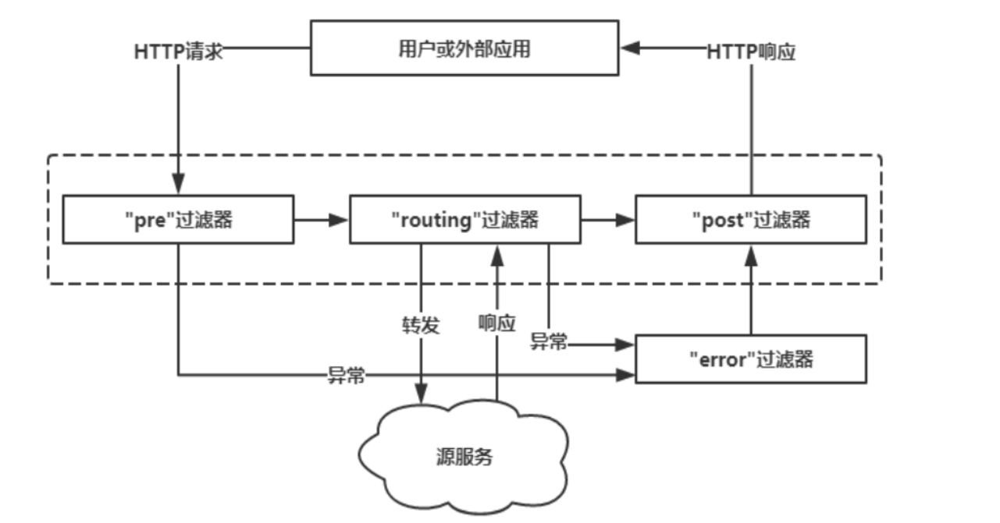
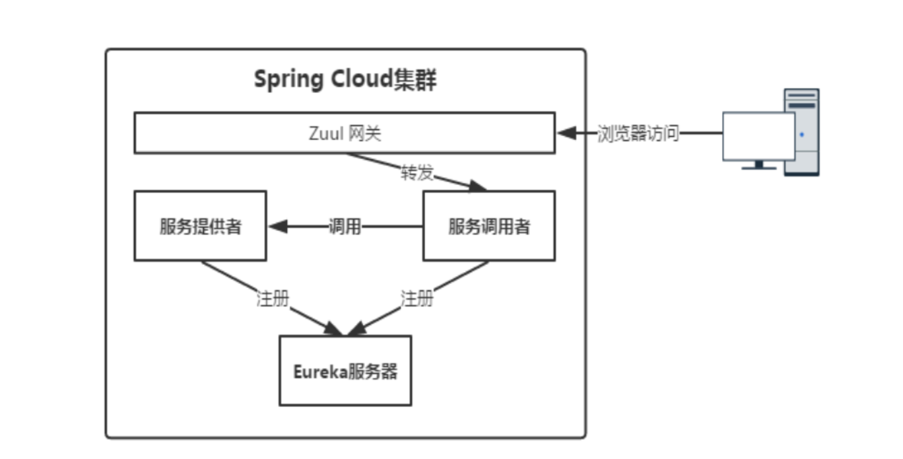

zuul api网关 所有的客户端请求通过这个网关访问后台的服务，他可以使用一定的路由配置来判断某一个url由那个服务来处理，并从eureka获取注册的服务来转发请求。
微服务网关应该具备的要素
稳定性、高可用：网关是所有请求的入口，如果这里出现问题就会导致所有的服务不能对外提供服务了，可见其重要性
性能、并发性：既然是所有请求的入口，那就意味着并发量大，这对其性能就有很高的要求。
安全性：确保服务的安全，防止外部恶意访问，就像金融行业一般会对数据进行加密传输。
拓展性：因为各种请求都经过网关服务，所以网关上大有文章可做，是处理所有非业务功能的绝佳场所，比如流控，协议转发，日志，防刷等等。
zuul的主要功能
认证和安全， 对每一个resource进行身份认证
追踪和监控，实时观察后端微服务的tps，响应时间，失败数量等准确的信息。
日志 记录所有请求的访问日志数据，可以为日志分析和查询提供统一支持
动态路由 动态的将request路由到后端的服务上去。
压力测试 逐渐的增加访问集群的压力，来测试集群的性能
限流，根据一定的策略对流量进行限定
静态响应 直接在网关返回一些响应，而不是通过内部的服务返回响应。
zuul的优势
易于监控，可在微服务网关收集监控数据并将其推送到外部系统进行分析。
易于认证，可以在微服务网关上进行认证，然后再将其请求转发到后端的微服务，而无须在每个微服务上进行认证
减少了客户端与各个微服务之间的交互次数。
zuul介绍
zuul的主要功能是路由转发和过滤器，路由功能是微服务的一部分，比如/api/user转发到user服务，/api/shop转发到shop服务，zuul默认和ribbon结合实现了负载均衡的功能，类似于nginx转发
提供代理、过滤、路由等功能
zuul：hystrix和ribbon支持 zuul天生就拥有线程隔离和断路器的自我保护功能，以及对服务调用的客户端负载均衡的功能，但是需要注意，当使用path与url的映射关系来配置路由规则的时候，对于路由转发的请求不会采用hystrix command来包装，所以这类路由请求没有线程隔离和断路器的保护，并且也不会有负载均衡的能力。因此，我们在使用zuul的时候尽量使用path和serviceid的组合来进行配置，这样不仅可以保证api的网关的健壮和稳定，也能用到ribbon的客户端负载均衡功能。
zuul的4种过滤器
zuul通过servlet来实现
pre 过滤器
routing过滤器
post过滤器
error过滤器
zuul的4种过滤器
前置(pre)：首先到达的是这里，注意这里是指Pre这种类型的过滤器，实际上不止一个过滤器，队请求路由前置加工，比如参数校验限流、鉴权
路由(route)：这里的是将请求转发到具体的original server（具体的微服务）上，可以在这里重写http请求
后置(post):这里是已经拿到的请求结果了，如果想对结果再加工一下，可以在这里，比如统计、日志。
错误(error)：pre或者route、post出现异常就会来到error，这里了可以统一处理异常。

zuul和cluster的模式 
编码 依赖： org.springframework.cloud:spring-cloud-starter-netflix-zuul
配置路由规则 1 2 3 4 5 6 7 8 9 zuul: routes: eureka-client-api: path: /eureka-client-api/** serviceId: eureka-client feign-client-api: path: /feign-client-api/** serviceId: feign-client
启动类：
1 2 3 4 5 6 7 8 9 @SpringBootApplication @EnableEurekaClient @EnableZuulProxy public class EurekaZuulClientApplication { public static void main(String[] args) { SpringApplication.run(EurekaZuulClientApplication.class, args); } }
访问：http://localhost:5000/eureka-client-api/info
feign的访问：http://localhost:5000/feign-client-api/infoByFeign
直接访问微服务的问题 我们配置了zuul，但是可以直接通过http://localhost:8888/info的方式直接访问微服务，越过了zuul。
端点信息开启 1 2 3 4 5 6 7 8 management: endpoints: web: exposure: include: '*' endpoint: shutdown: enabled: true
shutdown可以通过url的方式关闭app，不需要Linux的命令操作。
routes端点 访问：http://localhost:5000/actuator/routes
1 2 3 4 5 6 7 { /eureka-client-api/**: "eureka-client", /feign-client-api/**: "feign-client", /feign-client/**: "feign-client", /eureka-ribbon-client/**: "eureka-ribbon-client", /eureka-client/**: "eureka-client" }
罗列是当前已经好的端点的信息。【/feign-client/**: "feign-client"】【/eureka-client/**: "eureka-client"】是默认的映射，http://localhost:5000/eureka-client/info]进行访问。
1 2 3 4 5 6 7 8 9 10 11 zuul: routes: eureka-client-api: path: /eureka-client-api/** serviceId: eureka-client feign-client-api: path: /feign-client-api/** serviceId: feign-client ignored-patterns: /eureka-client/**, /feign-client/**
ignored-patterns过滤掉不想映射的路径形式。http://localhost:5000/eureka-client/info]就会404，证明配置有效。
调试 1 2 3 logging: level: com.netflix: debug
这样请求的路由转发日志就会打印出来。
访问：http://localhost:5000/eureka-client-api/getStudent?name=zhansan&address=tianjin'
1 2 3 4 5 6 7 8 9 10 { id: 20, name: "zhangsan", address: "guangzhou", parent: { id: 10, name: "parentName", address: "parentAddress" } }
这个时候我们在eureka-client的提供者查看日志 是能够看到header都能接受到的，证明zuul会把header的信息也会转发下去。
那么我们是否可以忽略掉一些header呢，答案是可以的：
1 2 3 4 5 6 7 8 9 10 11 zuul: routes: eureka-client-api: path: /eureka-client-api/** serviceId: eureka-client feign-client-api: path: /feign-client-api/** serviceId: feign-client ignored-patterns: /eureka-client/**, /feign-client/** ignored-headers: authKey
配置【ignored-headers: authKey】就可以访问eureka-client-api的时候忽略掉header的配置的key【authKey】。http://localhost:5000/eureka-client-api/getStudent?name=zhansan&address=tianjin'
ZuulFilter 1 2 3 4 5 6 7 8 9 10 11 12 13 14 15 16 17 18 19 20 21 22 23 24 25 26 27 28 29 30 31 32 33 34 35 36 37 38 39 40 41 42 43 44 45 46 47 48 49 50 import com.netflix.zuul.ZuulFilter; import com.netflix.zuul.context.RequestContext; import com.netflix.zuul.exception.ZuulException; import org.springframework.cloud.netflix.zuul.filters.support.FilterConstants; import javax.servlet.http.HttpServletRequest; public class MyZuulFilter extends ZuulFilter { @Override public String filterType() { return FilterConstants.PRE_TYPE; } @Override public int filterOrder() { return 0; } @Override public boolean shouldFilter() { return true; } @Override public Object run() throws ZuulException { System.out.println("Entered MyZuulFilter run Method"); //获取当前请求上下文 RequestContext requestContext = RequestContext.getCurrentContext(); HttpServletRequest request = requestContext.getRequest(); String method = request.getMethod(); String url = request.getRequestURL().toString(); System.out.println("method: " + method + ", url: " + url); return null; } } import com.netflix.zuul.ZuulFilter; import com.shengsiyuan.zuul.filter.MyZuulFilter; import org.springframework.context.annotation.Bean; import org.springframework.context.annotation.Configuration; @Configuration public class MyZuulConfig { @Bean public ZuulFilter myZuulFilter() { return new MyZuulFilter(); } }
zuul自动装配的源码解读 我们打开 启动的入口：
1 2 3 4 5 6 7 8 9 @SpringBootApplication @EnableEurekaClient @EnableZuulProxy public class EurekaZuulClientApplication { public static void main(String[] args) { SpringApplication.run(EurekaZuulClientApplication.class, args); } }
zuul的装配要从EnableZuulProxy注解开始，我们看一下EnableZuulProxy的逻辑：
1 2 3 4 5 6 7 @EnableCircuitBreaker @Target(ElementType.TYPE) @Retention(RetentionPolicy.RUNTIME) @Import(ZuulProxyMarkerConfiguration.class) public @interface EnableZuulProxy { }
引入了ZuulProxyMarkerConfiguration.class
1 2 3 4 5 6 7 8 9 10 11 12 13 14 @Configuration(proxyBeanMethods = false) public class ZuulProxyMarkerConfiguration { @Bean public Marker zuulProxyMarkerBean() { return new Marker(); } class Marker { } }
alt + f7 看一下ZuulProxyMarkerConfiguration在哪里被引用：
1 2 3 4 5 6 7 8 9 10 11 12 13 Class ZuulProxyMarkerConfiguration Found usages (2 usages found) Nested class access (1 usage found) Gradle: org.springframework.cloud:spring-cloud-netflix-zuul:2.2.2.RELEASE (1 usage found) org.springframework.cloud.netflix.zuul (1 usage found) ZuulProxyAutoConfiguration (1 usage found) 65 @ConditionalOnBean(ZuulProxyMarkerConfiguration.Marker.class) Usage in .class (1 usage found) Gradle: org.springframework.cloud:spring-cloud-netflix-zuul:2.2.2.RELEASE (1 usage found) org.springframework.cloud.netflix.zuul (1 usage found) EnableZuulProxy (1 usage found) 41 @Import(ZuulProxyMarkerConfiguration.class)
关键点： @ConditionalOnBean(ZuulProxyMarkerConfiguration.Marker.class)
1 2 3 4 5 6 7 8 9 @Configuration(proxyBeanMethods = false) @Import({ RibbonCommandFactoryConfiguration.RestClientRibbonConfiguration.class, RibbonCommandFactoryConfiguration.OkHttpRibbonConfiguration.class, RibbonCommandFactoryConfiguration.HttpClientRibbonConfiguration.class, HttpClientConfiguration.class }) @ConditionalOnBean(ZuulProxyMarkerConfiguration.Marker.class) public class ZuulProxyAutoConfiguration extends ZuulServerAutoConfiguration { ... }
ZuulProxyAutoConfiguration就是自动装配的逻辑.
1 2 3 org.springframework.boot.autoconfigure.EnableAutoConfiguration=\ org.springframework.cloud.netflix.zuul.ZuulServerAutoConfiguration,\ org.springframework.cloud.netflix.zuul.ZuulProxyAutoConfiguration
都是自动转配的类。
过滤器讲解 1 2 3 4 5 6 7 8 9 10 11 12 13 14 15 16 17 18 19 20 21 22 23 org.springframework.cloud.netflix.zuul.filters.post org.springframework.cloud.netflix.zuul.filters.post.LocationRewriteFilter org.springframework.cloud.netflix.zuul.filters.post.SendErrorFilter org.springframework.cloud.netflix.zuul.filters.post.SendResponseFilter org.springframework.cloud.netflix.zuul.filters.pre org.springframework.cloud.netflix.zuul.filters.pre.DebugFilter org.springframework.cloud.netflix.zuul.filters.pre.FormBodyWrapperFilter org.springframework.cloud.netflix.zuul.filters.pre.PreDecorationFilter org.springframework.cloud.netflix.zuul.filters.pre.Servlet30RequestWrapper org.springframework.cloud.netflix.zuul.filters.pre.Servlet30WrapperFilter org.springframework.cloud.netflix.zuul.filters.pre.ServletDetectionFilter org.springframework.cloud.netflix.zuul.filters.route org.springframework.cloud.netflix.zuul.filters.route.apache org.springframework.cloud.netflix.zuul.filters.route.okhttp org.springframework.cloud.netflix.zuul.filters.route.support org.springframework.cloud.netflix.zuul.filters.route.FallbackProvider org.springframework.cloud.netflix.zuul.filters.route.RestClientRibbonCommand org.springframework.cloud.netflix.zuul.filters.route.RestClientRibbonCommandFactory org.springframework.cloud.netflix.zuul.filters.route.RibbonCommand org.springframework.cloud.netflix.zuul.filters.route.RibbonCommandFactory org.springframework.cloud.netflix.zuul.filters.route.RibbonRoutingFilter org.springframework.cloud.netflix.zuul.filters.route.SendForwardFilter org.springframework.cloud.netflix.zuul.filters.route.SimpleHostRoutingFilter
ServletDetectionFilter.filterOrder() ServletDetectionFilter是用来探测请求是spring mvc的DispatcherServlet还是ZuulServlet的形式执行的。
1 2 3 4 5 6 7 8 9 10 11 12 13 14 15 16 17 18 19 20 21 22 23 24 /** * Must run before other filters that rely on the difference between DispatcherServlet * and ZuulServlet. 必须要在DispatcherServlet和ZuulServlet之前执行 */ @Override public int filterOrder() { return SERVLET_DETECTION_FILTER_ORDER;//-3 最先执行的 } public Object run() { RequestContext ctx = RequestContext.getCurrentContext(); HttpServletRequest request = ctx.getRequest(); //是否是DispatcherServlet if (!(request instanceof HttpServletRequestWrapper) && isDispatcherServletRequest(request)) { ctx.set(IS_DISPATCHER_SERVLET_REQUEST_KEY, true); } else { ctx.set(IS_DISPATCHER_SERVLET_REQUEST_KEY, false); } return null; }
Servlet30WrapperFilter 包装了servlet3.0规范的顾虑器，在ZuulFilter之前执行，顺序-2.
FormBodyWrapperFilter 在ZuulFilter之前执行，解析消息体的作用，顺序-1.
SendErrorFilter 异常的处理
SendResponseFilter 正常的响应处理
filter的串联FilterProcessor 1 2 3 4 5 6 7 8 9 10 11 12 13 14 15 16 17 18 19 20 21 22 23 24 /** * runs all filters of the filterType sType/ Use this method within filters to run custom filters by type * 根据filterType执行过滤器 * @param sType the filterType. * @return * @throws Throwable throws up an arbitrary exception */ public Object runFilters(String sType) throws Throwable { if (RequestContext.getCurrentContext().debugRouting()) { Debug.addRoutingDebug("Invoking {" + sType + "} type filters"); } boolean bResult = false; List<ZuulFilter> list = FilterLoader.getInstance().getFiltersByType(sType); if (list != null) { for (int i = 0; i < list.size(); i++) { ZuulFilter zuulFilter = list.get(i); Object result = processZuulFilter(zuulFilter); if (result != null && result instanceof Boolean) { bResult |= ((Boolean) result); } } } return bResult; }
【本期代码：https://github.com/1156721874/spring_cloud_projects】